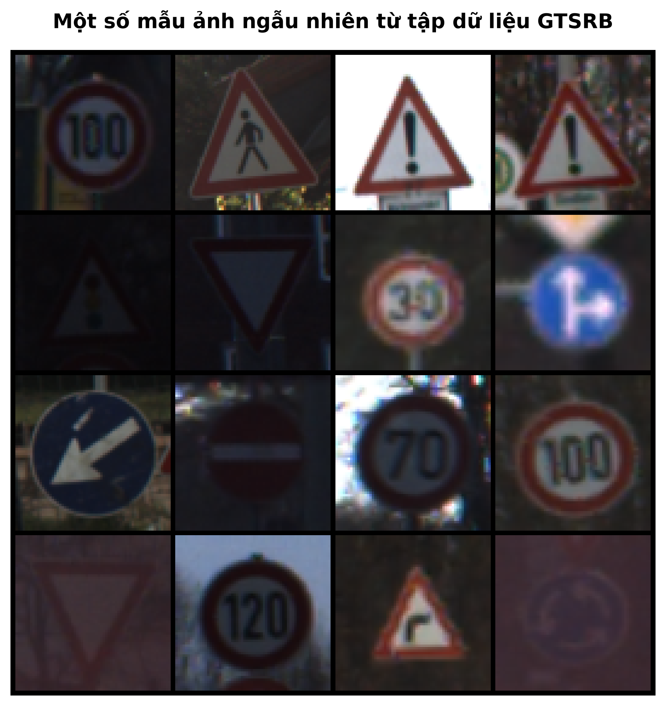
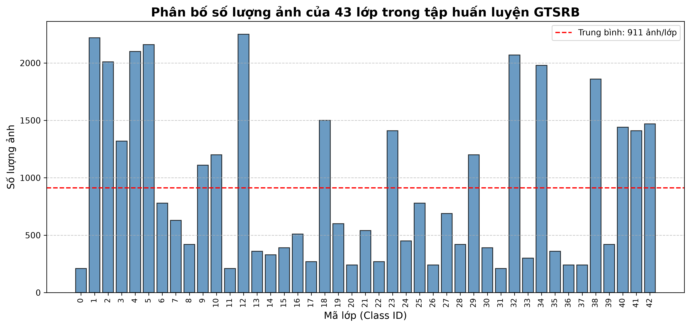
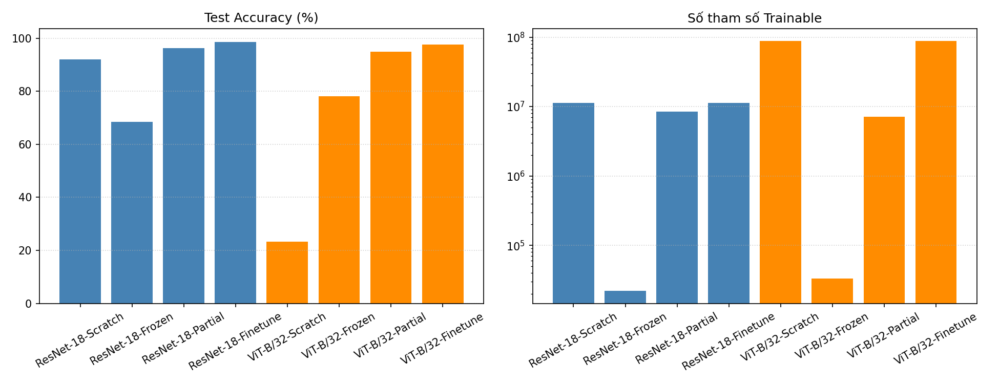
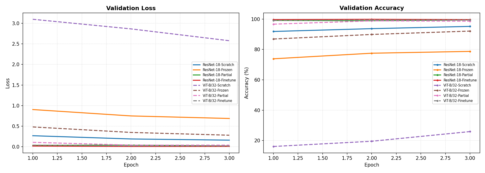
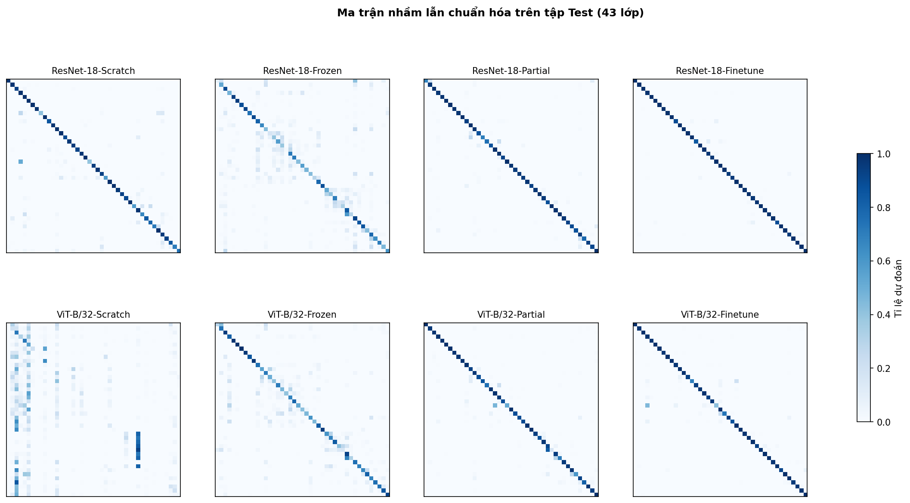

Nhóm: AutoVision | Sinh viên: Nguyễn Trần Phước (MSSV: 2470576)
Môn học: Học sâu và Ứng dụng trong Thị giác Máy tính (CO5085)
Dự án này so sánh toàn diện hai họ kiến trúc chính trong thị giác máy tính: Mạng nơ-ron Tích chập (CNN — ResNet-18) và Vision Transformer (ViT — ViT-B/32) trên bài toán nhận diện biển báo giao thông thực tế GTSRB (43 lớp). Hai kiến trúc được đánh giá xuyên suốt qua 4 chế độ huấn luyện: huấn luyện từ đầu (Scratch), đóng băng toàn bộ backbone (Frozen), mở khóa một phần backbone (Partial) và tinh chỉnh toàn bộ tham số (Finetune).
Tập dữ liệu: GTSRB (German Traffic Sign Recognition Benchmark) Dataset (~51.839 ảnh, 43 lớp biển báo giao thông).
Lý do chọn: Phù hợp trực tiếp với chủ đề giao thông và hệ thống hỗ trợ lái xe (Automotive / ADAS). Tập dữ liệu giải quyết bài toán phân loại đa lớp (43 lớp) với số lượng mẫu lớn và tính chất ảnh ngoài trời đa dạng (mờ chuyển động, ngược sáng, che khuất một phần), rất thích hợp để kiểm chứng khả năng trích xuất đặc trưng của CNN và ViT.
seed = 42): Tập Train/ được tách 90/10 ngẫu nhiên cố định, kết hợp tập kiểm thử độc lập theo Test.csv (ánh xạ chính xác ClassId sang class_to_idx):

Phân tích & Tiền xử lý (EDA): Dữ liệu có sự mất cân bằng rõ rệt giữa 43 lớp (các lớp phổ biến > 2.000 ảnh, các lớp hiếm ~210 ảnh). Khi huấn luyện mô hình ở A1.2, ảnh được đưa về kích thước 224 × 224 để tương thích với trọng số Pretrained ImageNet-1K, kết hợp Augmentation trên tập Train (RandomRotation(10°), ColorJitter(brightness=0.2, contrast=0.2)) và chuẩn hóa theo thống kê ImageNet.

ResNet-18 (Tổng số tham số: 11,198,571; thay tầng fc = Linear(512 → 43)).ViT-B/32 (Tổng số tham số: 87,488,299; thay tầng heads = Linear(768 → 43)).batch_size = 32, weight_decay = 1e-4, epochs = 3):
Scratch (lr = 1e-3): Khởi tạo ngẫu nhiên, huấn luyện 100% tham số.Frozen (lr = 1e-3): Trọng số Pretrained ImageNet-1K, đóng băng toàn bộ backbone, chỉ train classification head (ResNet-18: 22,059 params ~ 0.2%; ViT-B/32: 33,067 params ~ 0.04%).Partial (lr = 5e-4): Trọng số Pretrained ImageNet-1K, mở khóa block cuối cùng (layer4 của ResNet-18: 75.2% params; encoder_layer_11 + ln của ViT-B/32: 8.1% params) + head.Finetune (lr = 1e-4): Trọng số Pretrained ImageNet-1K, tinh chỉnh toàn bộ 100% tham số mạng.Bảng tổng hợp kết quả thực nghiệm của 8 cấu hình trên tập dữ liệu GTSRB (43 lớp):
| Mô hình | Kiến trúc | Chế độ | Tổng tham số | Trainable Params | Best Val Acc (%) | Test Acc (%) | Test F1-macro | Thời gian (s) |
|---|---|---|---|---|---|---|---|---|
| ResNet-18-Scratch | ResNet-18 | Scratch | 11,198,571 | 11,198,571 (100%) | 95.21 | 91.96 | 0.8968 | 237.8 |
| ResNet-18-Frozen | ResNet-18 | Frozen | 11,198,571 | 22,059 (0.2%) | 78.73 | 68.43 | 0.5991 | 163.9 |
| ResNet-18-Partial | ResNet-18 | Partial | 11,198,571 | 8,415,787 (75.2%) | 99.49 | 96.21 | 0.9462 | 162.3 |
| ResNet-18-Finetune | ResNet-18 | Finetune | 11,198,571 | 11,198,571 (100%) | 99.90 | 98.64 | 0.9793 | 174.0 |
| ViT-B/32-Scratch | ViT-B/32 | Scratch | 87,488,299 | 87,488,299 (100%) | 25.89 | 23.36 | 0.0951 | 510.5 |
| ViT-B/32-Frozen | ViT-B/32 | Frozen | 87,488,299 | 33,067 (0.04%) | 92.12 | 78.07 | 0.6980 | 214.8 |
| ViT-B/32-Partial | ViT-B/32 | Partial | 87,488,299 | 7,122,475 (8.1%) | 98.85 | 94.93 | 0.9072 | 231.3 |
| ViT-B/32-Finetune | ViT-B/32 | Finetune | 87,488,299 | 87,488,299 (100%) | 99.44 | 97.54 | 0.9582 | 509.7 |
ResNet-18-Finetune đạt hiệu năng cao nhất toàn bảng (Test Acc: 98.64%, F1-macro: 0.9793) với chi phí tính toán thấp hơn gần 3 lần so với ViT-B/32-Finetune (97.54%).


